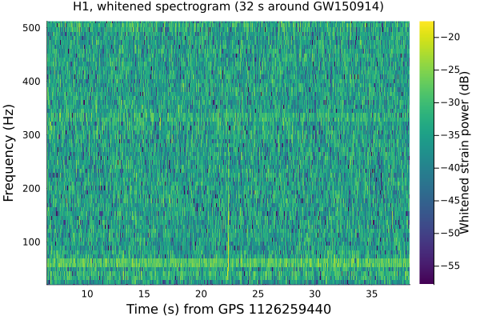
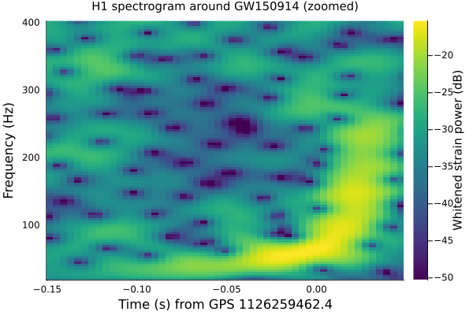

Spectrogram
A spectrogram shows how a signal's frequency content evolves over time: a sequence of short-time Fourier transforms (STFTs), one per time bin, stacked side by side into a time-frequency image. spectrogram (src/GravitationalWaveData/Spectrogram.jl) is a thin wrapper around DSP.spectrogram: a raw, un-averaged STFT power spectrogram (no Welch/median averaging of sub-segments within each column). This tutorial looks at GW150914 first across a 32 s window, then with a shorter FFT window zoomed in on the signal itself.
using GravitationalWaveData
using Plots
gr()Plots.GRBackend()Fetching and conditioning real strain data
We reuse the same standard 4096 s H1 segment covering GW150914 that the other tutorials use (cached locally after the first fetch), and the same whitening approach as the Filtering & Whitening tutorial: estimate an ASD from the whole 4096 s segment (long enough that GW150914's own sub-second signal can't meaningfully bias it) and whiten against it, hard-zeroing the response below 20 Hz via whiten's own highpass kwarg. Whitening flattens the spectrum so the STFT below isn't dominated by low-frequency seismic noise – without it, a spectrogram of raw strain shows essentially nothing but that noise floor.
gps_start, gps_end = 1126256640, 1126260736
gps_merger = 1126259462.4 # GW150914 merger GPS time
path = fetch_open_data("H1", gps_start, gps_end)
strain, dq_mask = load_gwosc_strain(path)
asd_est = asd(strain; seglen=round(Int, 4 * sample_rate(strain)))
white = whiten(strain, asd_est; highpass=20.0);crop down to a 32 s window centered on the merger – "a few tens of seconds", per this tutorial's brief, rather than the full 4096 s segment (unnecessary and slow to render as a spectrogram). This window sits deep in the interior of the 4096 s segment we whitened, well clear of the fduration/2-second edge transient whiten leaves at the very start/end of its output (see docs/CONVENTIONS.md's "Whitening" section).
seg = crop(white, gps_merger - 16, gps_merger + 16)TimeSeries{Float64}(131072 samples, t0=1.1262594463999023e9, dt=0.000244140625, duration=32.0s, name="strain")A first, full-window look
We use 1/8 s segments overlapping by 3/4. In samples at H1's 4096 Hz sample rate, that's an n=512-sample segment with noverlap=384, giving a column every 1/32 s. Much more overlap than this adds nothing to a 32 s picture: a figure this size is about 450 pixels across, so it could not draw thousands of columns anyway.
spec = spectrogram(seg; n=512, noverlap=384, name="Whitened strain power")
size(spec) # (nfreq bins, ntime bins)(257, 1021)The Spectrogram plot recipe defaults to a heatmap of power in dB, with color limits at the 1st and 99.9th percentiles so that a few extreme pixels don't wash out the rest. We restrict the frequency axis to 20-512 Hz (below 20 Hz is already hard-zeroed by whitening's own highpass, and GW150914 has little power above a few hundred Hz):
plot(spec; title="H1, whitened spectrogram (32 s around GW150914)", ylim=(20, 512))
Most of this image is noise. The bright horizontal band near 60 Hz is a narrow instrumental line that whitening against a 4 s ASD has not fully removed; lines like this are the tall peaks in the PSD & ASD tutorial's plots. GW150914 is the faint vertical streak at about 22 s on this axis, and since its chirp lasts well under a second out of the 32 s plotted, it's worth checking numerically that the streak is real. The loudest pixel below 512 Hz, away from the even louder instrumental lines near 1 kHz, sits almost exactly at the merger GPS time:
band = frequencies(spec) .<= 512
global_max, global_idx = findmax(spec.data[band, :])
peak_freq = frequencies(spec)[global_idx[1]]
peak_time_from_merger = times(spec)[global_idx[2]] - gps_merger
global_max, peak_freq, peak_time_from_merger(0.03146049874049904, 56.0, -9.775161743164062e-5)The Q-transform tutorial (06_qtransform) is specifically the better tool for finding a sub-second transient like this – it adapts its time/frequency resolution per frequency rather than using one fixed STFT window throughout. Here, we can still get a fair look at it with a plain spectrogram by zooming in.
Zooming in around the merger
The chirp is much shorter than 1/8 s, so the zoomed view needs a shorter segment: n=256 (1/16 s) with noverlap=240, a column every 1/256 s. Padding each segment to nfft=1024 samples doesn't add frequency resolution, but draws the same information on a finer 4 Hz grid.
GravitationalWaveData.jl doesn't yet provide a dedicated crop for Spectrogram the way it does for TimeSeries/FrequencySeries (docs/CONVENTIONS.md), so we restrict both axes by hand, the same half-open-window idea applied to a matrix instead of a vector:
fine = spectrogram(seg; n=256, noverlap=240, nfft=1024, name="Whitened strain power")
function crop_spectrogram(s::Spectrogram, t_range, f_range)
tvals = collect(times(s))
fvals = collect(frequencies(s))
tmask = t_range[1] .<= tvals .<= t_range[2]
fmask = f_range[1] .<= fvals .<= f_range[2]
return Spectrogram(s.data[fmask, tmask], first(tvals[tmask]), s.dt, first(fvals[fmask]), s.df;
name=s.name)
end
zoomed = crop_spectrogram(fine, (gps_merger - 0.15, gps_merger + 0.05), (20.0, 400.0))
size(zoomed)(96, 51)Restricting the data itself (not just the plotted axis limits) also tightens the color scale to the range that actually matters here, rather than one set by the 32 s window's overall extremes. For a window this short we pass epoch, which plots time relative to the given GPS time:
plot(zoomed; epoch=gps_merger, title="H1 spectrogram around GW150914 (zoomed)")
What this actually shows
Zoomed in like this, a rising streak is clear by eye: power climbs from around 32 Hz roughly 0.1 s before the merger time, passes about 60 Hz at that time, reaches about 150 Hz some 25 ms later, then fades within another ~20 ms – the classic inspiral-merger-ringdown shape of a binary black hole coalescence, and broadly consistent with GW150914's actual reported peak frequency (around 150 Hz). We can quantify the contrast against the background rather than just eyeballing it, comparing the peak found above to the 32 s spectrogram's typical (median) pixel value, in dB:
background_level = sort(vec(spec.data))[length(spec.data) ÷ 2]
global_max, background_level, 10 * log10(global_max / background_level)(0.03146049874049904, 0.00035965356962419886, 19.418812280673585)The peak is roughly 19 dB above the typical background pixel, a real excursion and not an artifact of the color scale. That said, this is a less sharp picture than a multi-resolution method produces: a fixed-window STFT (even a heavily-overlapped one like this) trades time resolution against frequency resolution the same way at every frequency, whereas GW150914's chirp sweeps through several octaves in a fraction of a second – exactly the regime where a fixed-resolution STFT struggles and a multi-resolution method doesn't. See the Q-transform tutorial (06_qtransform) for that sharper, purpose-built view of the same GW150914 chirp.
This page was generated using Literate.jl.